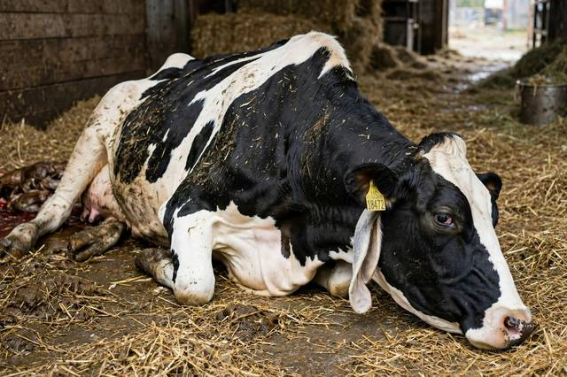
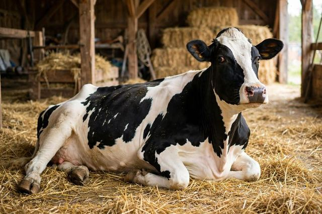

Downer cow syndrome describes cattle that remain unable to rise after an initial illness or injury. It is a clinical sign rather than a single disease and can result from metabolic, traumatic, infectious or neurological causes.
This guide covers clinical signs, causes, diagnosis, treatment principles and prevention.
Clinical Signs
1
Inability to stand(Cannot rise to its feet)
2
Abnormal limb position(Legs held in an unusual position)
3
Weakness(Dull and lacking strength)
4
Pain(Shows signs of pain)
5
Reduced appetite(Eats and drinks less)
6
Dehydration(Loss of body fluids)
7
Pressure sores(Sores from lying down too long)
Inability to stand

Abnormal limb positionWeakness

PainReduced appetiteDehydrationPressure sores
Causes and Transmission
Possible causes include milk fever, calving injury, muscle or nerve damage, trauma, severe mastitis or metritis, toxic disease and prolonged recumbency causing pressure injury.
Pathogenesis
A downer cow is one that cannot rise, most often after calving. The commonest starting cause is milk fever, but any cow that stays down for more than a few hours begins to suffer pressure damage: the weight of her own body compresses the muscles and nerves of the down-side hind leg, cutting off their blood supply.
The damaged muscle swells and dies (ischaemic muscle necrosis) and nerves are crushed, so even after the original cause is treated the cow may still be unable to stand. Prolonged recumbency also leads to pressure sores, mastitis and further complications.
Veterinary Diagnosis
A veterinarian performs a full examination, reviews calving and illness history, checks metabolic status and assesses for fractures, nerve injury, infection and muscle damage. Blood tests and imaging may be needed.
Differential Diagnosis
Several conditions can look similar. A veterinarian distinguishes them by the signs, history and laboratory findings:
Milk fever — causes a cow to go down after calving but usually responds to calcium treatment.
Ketosis — causes reduced appetite and a milk drop, but the cow usually remains standing.
Postpartum metritis — causes fever and foul-smelling discharge after calving.
Hip dislocation, fracture or nerve injury at calving — cause recumbency with one leg abnormally positioned or unable to bear weight.
Treatment and Case Management
Treat the underlying cause promptly. Provide deep dry bedding, safe positioning, access to water and feed, frequent monitoring and a veterinarian-directed lifting plan. Avoid dragging the animal or using unsafe lifting equipment.
When to seek urgent help: A newly recumbent cow requires urgent veterinary assessment. Do not drag or suspend an animal for prolonged periods.
Recommended Medicines
1
Fluid therapy – IV fluids(For dehydration and general support)As prescribed by a veterinarian
2
NSAID – Meloxicam(For pain relief)0.5 mg/kg IV/SC once
3
Supportive care – Calcium borogluconate(If low blood calcium is the underlying cause)As prescribed by a veterinarian
⚠ Important Tips:
Treatment targets the underlying cause — the vet must find why the cow went down.
Provide deep dry bedding and turn the cow regularly to prevent pressure sores.
Never drag a down cow or lift it with unsafe equipment.
Use medicines only under veterinary advice.
IV fluid therapy — vet-administeredInjection — vet-administered only
Prevention and Herd Management
Prevent metabolic disease around calving, provide non-slip flooring, assist difficult calvings appropriately, treat illness early and use safe handling facilities.
Frequently Asked Questions
What is downer cow syndrome?
Downer cow syndrome describes cattle that remain unable to rise after an initial illness or injury. It is a clinical sign rather than a single disease, and can result from metabolic, traumatic, infectious or neurological causes.
What causes a cow to become a downer?
Possible causes include milk fever, calving injury, muscle or nerve damage, trauma, severe mastitis or metritis, toxic disease, and prolonged recumbency causing pressure injury.
What are the signs of downer cow syndrome?
Inability to stand, abnormal limb position, weakness, pain, reduced appetite, dehydration and pressure sores. The history and signs before the cow became recumbent help identify the cause.
How is a downer cow treated?
Treat the underlying cause promptly, and provide deep dry bedding, safe positioning, access to water and feed, frequent monitoring and a veterinarian-directed lifting plan. Never drag the animal or use unsafe lifting equipment. A newly recumbent cow requires urgent veterinary assessment.
How can downer cow syndrome be prevented?
Prevent metabolic disease around calving, provide non-slip flooring, assist difficult calvings appropriately, treat illness early and use safe handling facilities.
Why is my cow not standing up?
A cow may fail to rise because of milk fever, calving injury, muscle or nerve damage, severe mastitis or metritis, or prolonged recumbency. A newly recumbent cow requires urgent veterinary assessment to find the cause.
What to do if a cow cannot stand after calving?
Treat the underlying cause promptly, and provide deep dry bedding, safe positioning, water and feed, and frequent monitoring. Never drag the animal or use unsafe lifting equipment, and follow a veterinarian-directed lifting plan.
گائے کھڑی کیوں نہیں ہوتی؟
دودھ کا بخار، بچہ دینے کے وقت چوٹ، پٹھوں یا اعصاب کی خرابی، شدید سوزش حیوانہ یا میٹرائٹس گائے کے کھڑا نہ ہونے کی وجوہات ہو سکتی ہیں۔ نئی گری ہوئی گائے کا فوراً ویٹرنری معائنہ ضروری ہے۔ جانور کو گھسیٹیں نہیں۔
Key Takeaway
Early recognition, accurate diagnosis, responsible veterinary care and herd-level prevention are central to managing this condition. Follow current local veterinary authority guidance and medicine labels.
Radostits, O.M., Gay, C.C., Hinchcliff, K.W., Constable, P.D. Veterinary Medicine: A Textbook of the Diseases of Cattle, Horses, Sheep, Pigs and Goats.
FAO animal health manuals. Food and Agriculture Organization of the United Nations.
✍️ Written by Dr. Shahid Bilal Depal, DVM (PVMC RVMP #15068)
This guide is for educational purposes. Consult a registered veterinarian for diagnosis and treatment.